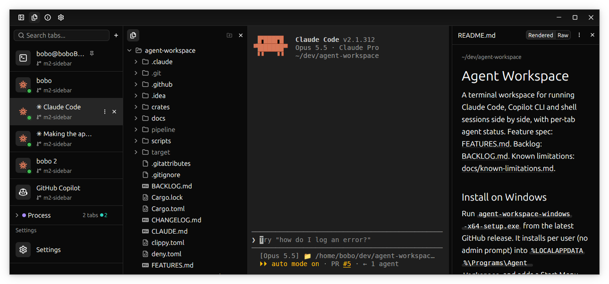

A desktop terminal for running Claude Code, Copilot CLI and shells side by side in tabs, with each tab's agent status visible at a glance. This page names every part of the window, the code behind it, and what each part does.
Left to right: the sidebar with the tabs, the file explorer, the terminal, and the file viewer. The numbered dots match the list below the screenshot.

1 2 3 4 5 6 7 8 9 10Title barSidebar toggle, explorer toggle, About (i) and Settings (gear); window buttons on the right.
workspace_view.rs
Sidebar header"Search tabs..." (Ctrl+Shift+S) and the + new-tab menu. A warning button with a count shows here when other tabs need attention.
workspace_view.rs · sidebar
Pinned tabThe pin marks a tab kept at the top and spared by "Close other tabs".
tab layout pins
Tab rowKind icon with its status badge (bottom right), name, and branch or folder below. Hovered or selected rows show ⋮ (tab menu) and ×. Hover for the tab hover card.
TabMeta · sidebar
Group headerCollapsed here: its color, name, tab count and status counts (2 idle).
workspace-model · tab layout
Settings rowAdded under the tabs while the settings page is open; close it with its ×.
settings_page.rs
File explorerThe selected tab's folder; follows cd. Header: parent folder button and ×.
file_explorer.rs · file_tree
Dimmed entriesGit-ignored entries and .git are dimmed (pipeline, target).
file explorer git ignore
TerminalThe tab's live session, here Claude Code. Clickable links, search, history popup on Up in shell tabs.
terminal_view.rs · terminal_element.rs · term-core
File viewerThe tab's open file with its folder. Rendered / Raw for Markdown, JSON and SVG, ⋮ menu (Save), × to close.
file viewer · workspace-model decoding
The words used in the README, the backlog and the code. Use these names in issues and backlog items so everyone means the same thing.
| Name | What it is | In code |
|---|---|---|
| Tab | One session: a shell, Claude Code or Copilot CLI, with its own terminal, folder and open file. | TabMeta, TerminalView |
| Tab row | The tab's line in the sidebar. | sidebar in workspace_view.rs |
| Tab menu | Right-click or ⋮: duplicate, pin, rename, copy branch / title / folder, move, close, color, groups. | start_rename, … |
| Tab hover card | Status, full folder, branch, program title, session kind, +N lines changed. | Appearance → Tab hover card |
| Group | Named, colored, collapsible set of tabs. Kept when empty. | workspace-model tab layout |
| Pinned tab | Stays at the top; spared by "Close other tabs". | tab layout pins |
| Launcher | An entry of the + menu, with a stable id: bash, zsh, fish, pwsh, powershell, cmd, git-bash, wsl:<distro>, claude, copilot. | launcher.rs |
| Session | The pty-backed child process feeding an alacritty Term. | term-core::Session |
| Shell integration | Small scripts that load your rc files and mark prompts with OSC 133 plus a per-session token. | shell_integration.rs, MarkedPty |
| Agent status | Working, Waiting, Idle and so on, from the agent's own hooks or OSC 9;4 progress. | AgentStatus, HookServer |
| Hook helper | Tiny binary next to the app that forwards hook JSON to the right tab. | agentws-hook |
| Settings page | Searchable settings in place of the terminal, plus a Settings row under the tabs. | settings_page.rs, settings.json |
| Config folder | Holds settings.json, tabs.json, history.jsonl, shell-integration/. | settings_file.rs, tabs_file.rs |
The badge on a tab's icon is the same status used by the hover card, group totals and toasts. Ready for review means unread finished work, not that the work is correct.
| Badge | Meaning |
|---|---|
| Working | The agent is on a turn. A Copilot tab also shows a turning ring before the title. |
| Needs attention | Waiting for permission, waiting for your reply, a bell, or a clipboard write to approve. A ▲ shows before the title. |
| Ready for review | Finished while you were on another tab, until you select it (shown with a check). |
| Idle | The agent waits for your next prompt. |
| Running | A command typed at a bash, zsh or PowerShell prompt has run for over half a second. Pulses for 10 s. |
| Recent output | Output arrived lately, with no reliable agent status. |
| Exited | The program ended with an error. An agent that exits with 0 becomes a shell tab instead. |
Only app depends on GPUI. Pure logic lives in workspace-model with unit tests. Agent hooks travel through agentws-hook over a local socket or pipe.
path:line linkssettings.json, shortcuts too| Keys | Action |
|---|---|
| Ctrl+Tab / Ctrl+Shift+Tab | Next / previous tab |
| Ctrl+1..9 | Select tab 1 to 9 |
| Ctrl+Shift+T | New tab with the default shell |
| Ctrl+Shift+S | Search tabs |
| Ctrl+Shift+B | Hide or show the sidebar |
| Ctrl+Shift+| | Hide or show the file explorer |
| Ctrl+Shift+A | Next tab needing attention |
| Ctrl+Shift+F | Search terminal output |
| F11 | Full screen |